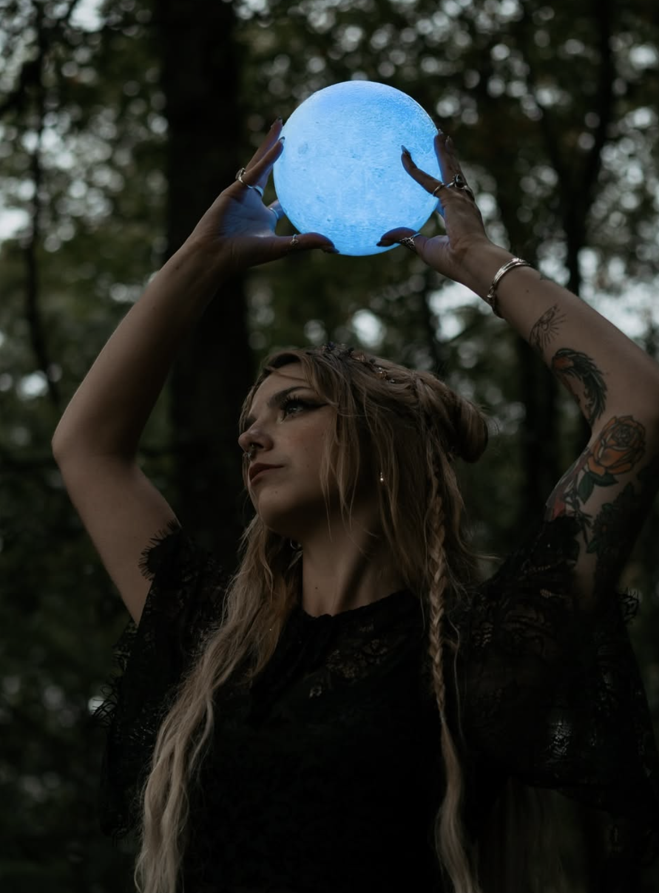
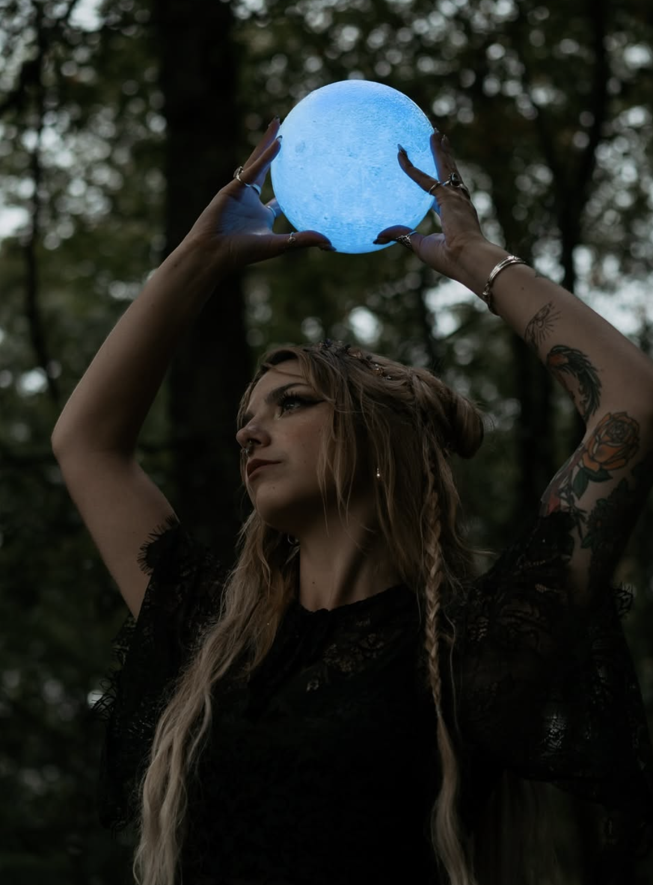
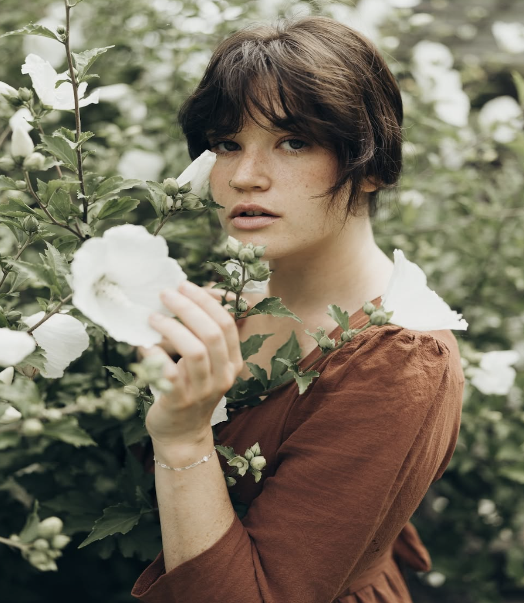
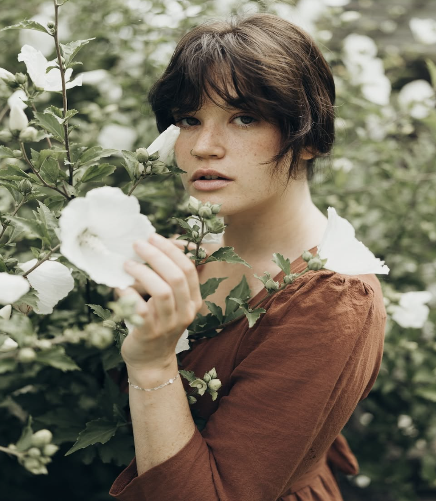

- Skills
- Projects
- About Me
- Contact
 


 


I have been an artistic soul for as long as I can remember. I have done and tried
everything that has to do with the arts. I have been an actress, dancer, singer, model,
photographer, director, writer, set designer, and a painter. After experiencing all of these different
areas of the arts, it made me realize who I want to be and who I was meant to be in this life.
I'm a storyteller and a teacher.
Storytelling is how I express myself to the world. I have told stories in many different
ways through the arts and I love connecting with people and making others feel something
when they see my work. I want to make people think and see things from different angles.
It's a way to inspire, relate to and help others.